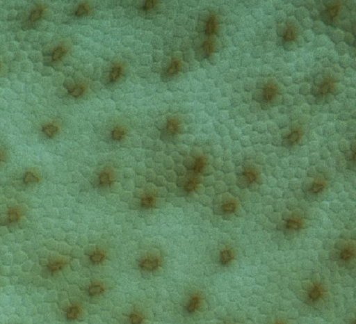

Alcătuirea ochiului
Ochiul uman este un receptor de lumină complex, de formă aproximativ sferică, având diametrul aproximativ 2,3 cm (figura 1).
Fig. 1.
Secţiune în plan orizontal a ochiului drept.
Suprafeţele curbe ale corneei şi cristalinului, precum şi indicii de refracţie ai materialelor care constituie componentele ochiului, atestă faptul că acesta
este un sistem optic convergent, capabil să formeze imagini reale pe retină.
Irisul limiteaza cantitatea de lumină care pătrunde în ochi prin pupilă. La iluminare normala, diametrul pupilei este aproximativ 4 mm. Acest diametru
se dubleaza la întuneric şi se înjumătăţeşte în lumină intensă.
 Activitatea experimentală 1
Activitatea experimentală 1
Observă modificarea diametrului pupilei la modificarea iluminării. Lucrează împreună cu altcineva.
Pasul 1. Reduceţi cât mai mult lumina din încăpere. Îndreaptă fasciculul de lumină al unei lanterne către unul dintre ochii celuilalt (celeilalte).
Observă ce se întâmplă cu pupilele acestuia (acesteia).
Pasul 2. Inversaţi rolurile.
Surprinzător, chiar dacă iluminezi puternic doar unul dintre ochii celuilalt (celeilalte), pupilele ambilor ochi se micşorează!
Sub acţiunea muşchilor ciliari, curbura cristalinului se poate modifica, permiţând astfel ochiului să se acomodeze pentru obiecte aflate la distanţe
foarte diferite.
Activitatea experimentală 2
Observă capacitatea ochiului de a se acomoda pentru obiecte aflate la distanţe foarte diferite.
Pasul 1. Închide un ochi şi ţine un deget în faţa ochiului deschis, la câteva zeci de centimetri.
Concentrează−ţi privirea asupra asupra degetului. Când vezi degetul clar, mai vezi clar obiectele aflate în fundal, la mai mulţi metri distanţă?
Pasul 2. Concentrează−ţi acum privirea asupra unui obiect aflat la mai mulţi metri distanţă, în dreptul detetului.
Când vezi clar acest obiect, mai poţi vedea clar degetul?
Retina este "căptuşită" cu sute de milioane de celule sensibile la lumină (figura 2).

Fig. 2.
Retina.
"Petele" mai întunecate, numite conuri (figura 3a), sunt încadrate strâns de bastonaşe (figura 3b).
Fig. 3.
Con (a) şi bastonaş (b).
Diametrul fiecărei celule este de aproximativ 4,5 µm.
Conurile sunt sensibile la culoarea luminii, dar au nevoie de lumină de intensitatea celei din timpul zilei. Bastonaşele nu sunt sensibile la culoarea
luminii, dar reacţionează şi la nivele reduse de iluminare.
Conurile sunt mai dese într−o zonă cu diametrul aproximativ 2 mm, numită pata galbenă. În centul acestei zone, acolo unde axa vizuală
intersectează retina, pe o zonă de aproximativ 0,3 mm, există doar conuri. Această zonă minusculă, numită foveea centralis, oferă cele mai
detaliate imagini.
Când citeşti o carte, privind−o de la 25 cm, doar imaginea unei sinugure litere (de mărimă normală) se formează în foveea centralis!
Sub acţiunea luminii, conurile şi bastonaşele transmit impulsuri electrice către alte celule, cu care sunt interconetate într−o reţea de o
complexitate uluitoare (figura&nbap;4)!
|
a
|
b
|
Fig. 4. Reţeaua de conectare a conurilor şi bastonaşelor: a) reprezentare reală;
b) reprezentare schematică. Lumina pătrunde de deasupra!
|
Mănunchiul terminaţiilor nervoase ale acetei reţele "străpunge" globul ocular într−o zonă numită "pata oarbă". Această zonă ese lipsită de celule
sensibile la lumină!
Activitatea experimentală 3
Convinge−te de existenţa petei oarbe!
Pasul 1. Citeşte instrucţiunile acestei activităţi experimentale, apoi fă click-stânga pe desenul din figura 5. Vei afişa astfel desenul
într−o fereastră distinctă.
Pasul 2. Închide ochiul stâng şi priveşte desenul, astfel ca pata pătrată să fie în dreptul ochiului tău drept.
Pasul 3. Apropie−te lent de ecran, PRIVIND MEREU PATA PĂTRATĂ.
Observă dispariţia subită a petei circulare, într−o anumită poziţie a ta faţă de desen!
Fig. 5.
Desen pentru punerea în evidenţă a existenţei petei oarbe.
Surprinzător, când imaginea petei circulare se formează pe pata oarbă a ochiului tău drept, deşi acolo nu există celule sensibile la lumină, creierul tău
"completează" cu "ceva" zona corespunzătoare petei oarbe. Astfel, nu vezi vreo "gaură neagră" în câmpul vizual al unui ochi!
 Provocarea 1
Provocarea 1
Pune în evidenţă pata oarbă a ochiului tău stăng!